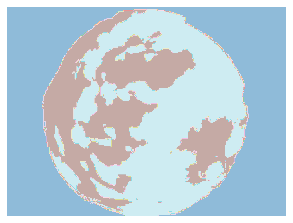

from fastai.vision.all import *
You already have a trained model and want to run inference over a large dataset of images (in my case over 3kk images), how to do this efficiently and fast. We already have access to fastai’s Learner.get_preds method, but you need to be able to fit in memory the full output, for my use case of segmentation masks over large images it is just not possible. Let’s build a solution to save the prediction to file using a dataloader to make inference fast and batched.
def is_gpu(dev=0):
if torch.cuda.is_available():
torch.cuda.set_device(dev)
print(torch.cuda.get_device_name(dev))is_gpu()Quadro RTX 8000we already have a model that is working good, for the sake of simplicity I am loading a torchscript model from file.
model = torch.jit.load(PATH/'model_checkpoints/unet_small_stage1.jit').cuda()we have a dataframe with our data
df.head()| group | image_path | elevation | azimuth | ghi_cs | kt | ghi | |
|---|---|---|---|---|---|---|---|
| utc | |||||||
| 2019-01-08 10:04:16.970 | 0 | 2019-01-08/image19-01-08_10-04-16-97.png | 18.020898 | 1412.8 | 277.376311 | 0.181790 | 50.426096 |
| 2019-01-08 10:18:17.000 | 1 | 2019-01-08/image19-01-08_10-18-17-00.png | 18.975492 | 1412.8 | 295.647541 | 0.185127 | 54.741370 |
| 2019-01-08 10:19:16.980 | 1 | 2019-01-08/image19-01-08_10-19-16-98.png | 19.038769 | 1412.8 | 296.875387 | 0.177907 | 52.806228 |
| 2019-01-08 10:41:16.960 | 2 | 2019-01-08/image19-01-08_10-41-16-96.png | 20.297296 | 1412.8 | 321.138689 | 0.177493 | 57.007973 |
| 2019-01-08 10:42:16.950 | 2 | 2019-01-08/image19-01-08_10-42-16-95.png | 20.344993 | 1412.8 | 322.050887 | 0.194303 | 62.576990 |
Inference on one image at a time
let’s grab one image:
img_path = df.image_path.sample(1).item()
pil_img = load_image(img_path)
pil_imgWe will use fastai transforms, but the same can be done using torchvision.transforms,
import torchvision.transforms as T
img_tfms = T.Compose([T.ToTensor(),
T.Normalize(*WSISEG_STATS)])Here to compose we use the Pipeline
tfms = Pipeline([PILImage.create,
ToTensor(),
IntToFloatTensor(),
Normalize.from_stats(*WSISEG_STATS, cuda=False)])these transforms will convert the image to tensor, so we can pass it through the model
tensor_img = tfms(img_path)into the model
raw_out = model(tensor_img.cuda())
raw_out.shapetorch.Size([1, 4, 192, 256])this is a segmentation model with 4 classes, so the output has 4 channels. We need to postprocess this to get a 1 channel uint8 image with values in [0,1,2,3]. We will also reconvert this output to PIL to save it later.
def postprocess(out):
"Transform the output of the model to a uint8 mask"
return PILMask.create(out.squeeze(0).argmax(0).cpu().numpy().astype(np.uint8))it looks fine
show_images([pil_img, postprocess(raw_out)])Now, if we want to compute this process on all images (it is going to be slow…) let’s do some refactor:
def predict_one(img_path):
"evaluate `img_path` into model"
tensor_img = tfms(img_path)
with torch.no_grad():
raw_out = model(tensor_img.cuda())
return postprocess(raw_out)mask = predict_one(img_path)
mask.show();
We now want to save this image besides the original one. Let’s leverage some fastcore’s magic and patch pathlib.Path to be able to put an arbitrary suffix on our images: :::{.callout-note}
Path.with_suffix cannot put an arbitrary suffif with the _GT string before the extension, so we have to patch it.
:::
@patch
def my_suffix(self:Path, suffix=''):
"replace the everything after the dot (including the dot) with `suffix`"
path = self.with_suffix('')
return path.parent/f'{path.name}{suffix}'this way, our masks will be called *_GT.png
img_path, img_path.my_suffix('_GT.png')(Path('2019-01-27/image19-01-27_09-54-01-97.png'),
Path('2019-01-27/image19-01-27_09-54-01-97_GT.png'))To process the full dataset one would do this: - iterate over all images one by one - compute inference on each - save the postprocessed mask
for img_path in progress_bar(df.image_path.to_list()):
mask = predict_one(img_path)
mask.save(img_path.my_suffix('_GT.png'))Batched images to files
From DataLoader to files
Let’s try to make better use of the GPU, we will feed batches of images all at once. We already have DataLoaders to do this, let’s make a simple TfmdDL object, to stack our items with the transforms together. Here we need to split the transforms on the ones that are called after getting the item (the image path) and after stacking the tensors into a batch. The latter ones are computer on the GPU.
files = df.image_path.to_list()
dl = TfmdDL(files,
bs=64,
after_item=[PILImage.create, ToTensor()],
after_batch=[IntToFloatTensor, Normalize.from_stats(*WSISEG_STATS)],
device='cuda:0')we get a nice batch of images (64 in this case) ready to feed the model
b = next(iter(dl))
b.shapetorch.Size([64, 3, 192, 256])model(b).shapetorch.Size([64, 4, 192, 256])Here we have performed inference on 64 images all at once, but the posprocessing need to happen imager per image anyway. We have recover the original images filenames to be able to store the masks and make the maping with the original image. We kind of need a DataLoader for the filenames, here comes chunked function to the recue. :::{.callout-note}
chunked splits the files on chunks of bs so we can iterate at the same time on the image paths.
:::
fnames_bs = chunked(files, chunk_sz=64)In my case, this solution is 10 times faster than doing the images one by one.
for b, fnames in progress_bar(zip(dl, fnames_bs), total=len(files)//bs):
with torch.no_grad():
y = model(b)
for torch_mask, fname in zip(y, fnames):
mask = postprocess(torch_mask)
mask.save(fname.my_suffix('_GT.png'))With a DataBlock
We can do the same thing with a data block
block = DataBlock(blocks=ImageBlock,
get_x=ColReader('image_path'),
batch_tfms= [Normalize.from_stats(*WSISEG_STATS)],
splitter=lambda o: ([], range_of(o)),
)dl = block.dataloaders(df, bs=64, suffle=False).validthe DataBlock API generates a DataLoaders object, that is just a wrapper around a train/valid pair of DataLoaders. As we passed a dummy split (no split), the train dataloader is empty, and we will use only the valid one. Also, the batch in this case is composed of a tuple (x,y) where y is empty, hence we need to do x, = b (or b[0])
for b, fnames in progress_bar(zip(dl, fnames_bs), total=len(files)//bs):
with torch.no_grad():
x, = b
y = model(x)
for torch_mask, fname in zip(y, fnames):
mask = postprocess(torch_mask)
mask.save(fname.my_suffix('_GT.png'))
85.72% [2773/3235 06:11<01:01]
The fastai way
Using the
test_dlon theLearner.
If you have loaded in memory a learner (or a DataLoaders) you can use the test_dl method. This is very handful when you just finished training your model. You can easily construct a dataloader with the exact same transforms used to train the model (in reality it takes the validation transforms, so no augment and no shuffling). Then, you can do just like before using the test_dl
test_dl = learn.dls.test_dl(files)for b, fnames in progress_bar(zip(test_dl, fnames_bs), total=len(files)//bs):
with torch.no_grad():
y = model(b)
for torch_mask, fname in zip(y, fnames):
mask = postprocess(torch_mask)
mask.save(fname.my_suffix('_GT.png'))